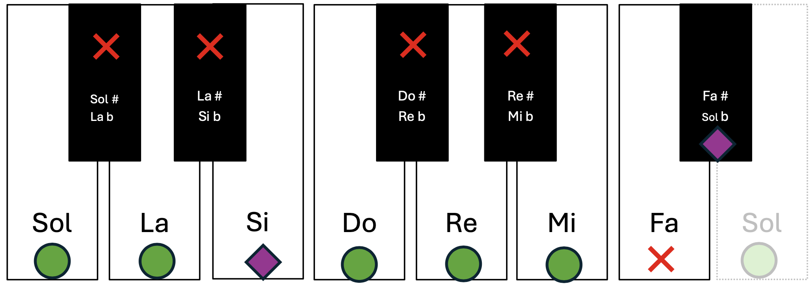
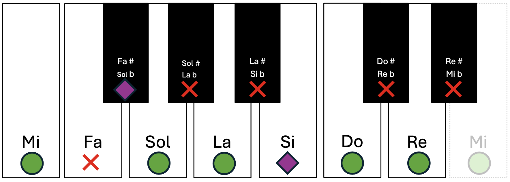

Cada escala mayor tiene una escala relativa menor.
- La escala relativa menor de una mayor comienza en la sexta nota de la escala mayor.
- La escala relativa mayor de una escala menor comienza en la tercera nota de la escala menor.
Las escalas relativas comparten siempre las mismas notas. Ya hemos comprobado que do mayor tiene su relativa: la menor. Si cogemos la escala de sol mayor, su sexta nota es mi, por lo que la escala relativa menor será: mi menor. Vamos a construirla empezando por la tónica (mi) y el código de distancias de escala menor: T – ST – T – T – ST – T – T.


Efectivamente, mi menor tiene solo una nota alterada: fa #; al igual que en sol mayor. Sabemos que es fa# y no sol b porque la nota sol natural se usa en la escala.